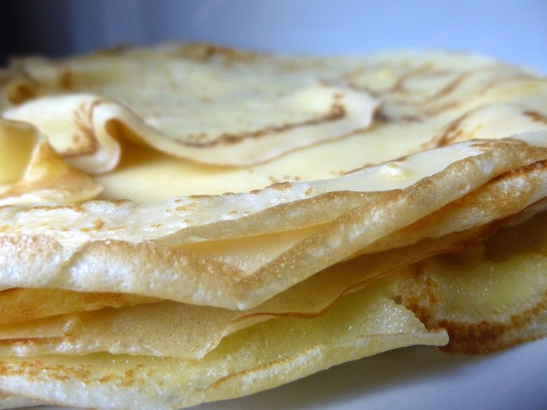

Crêpes du dimanche soir

Ici vous trouverez une recette incontournable pour moi : celle des crêpes!
« La pâte à crêpes » ! Il en existe des tas de versions différentes ! Quand j’étais petite nous faisions quasiment tous les dimanches de bonnes crêpes pour le goûter et quelquefois pour le diner du dimanche soir!! J’ai perpétué cette habitude car généralement tous les dimanches soirs mon chéri me demande de lui faire cette recette (et c’est surtout l’occasion de manger encore plus de nutella^^)! Comme quoi il y a vraiment des habitudes qui perdurent.. En même temps les crêpes je ne sais pas qui n’aiment pas ça! Même par 30° en pleine vacance d’été je peux facilement aller m’acheter une crêpe pleine de chocolat.
Aujourd’hui, je partage avec vous cette recette toute simple qui vous permettra de faire de très bonnes crêpes qui sauront ravir petits et grands 🙂
Ingrédients
- Farine - 300g
- oeufs - 4 oeufs
- sucre - 2 càs
- Sucre vanillé - 1 sachet
- Lait - 500ml
- rhum ambré - 4 càs
- Beurre - 15 g
- sel - 1 pincée
Instructions
- Dans une jatte mélanger la farine, le sucre et le sel.
- Ajouter les œufs et bien battre le mélange
- Faire fondre le beurre
- Ajouter le beurre fondu et mélanger
- Verser petit à petit le lait tout en remuant pour éviter les grumeaux (à ce stade, vous pouvez mixer le tout)
- Ajouter le rhum, la fleur d'oranger, la vanille enfin ça c'est comme vous voulez!
- Laisser reposer la pâte au moins 1h au frais (si vous ne pouvez pas attendre sauter cette étape!! 🙂 )
- Cuire les crêpes!(dans une poêle avec un peu de matière grasse faire cuire les crêpes 1 à 2min de chaque côté)

Les tips de la communauté
Recette très appréciée et validée par tous. Les proportions sont parfaites, les crêpes légères et divines. Une correction importante a été signalée sur les proportions bière/lait (50/50) que l'auteure a rectifiée.
Astuces
- Utiliser de la fécule à la place d'un peu de farine pour des crêpes plus légères
- Les proportions du mélange bière/lait doivent être équilibrées (250ml lait + 250ml bière)
- Excellente recette pour les moments pluvieux et reconfortants
Variantes suggérées
- Version salée avec garnitures variées
- Utilisation de fécule pour plus de légèreté
Ajustements signalés
- Proportion bière/lait clarifiée : 250ml bière et 250ml lait (remplaçant partiellement le lait)